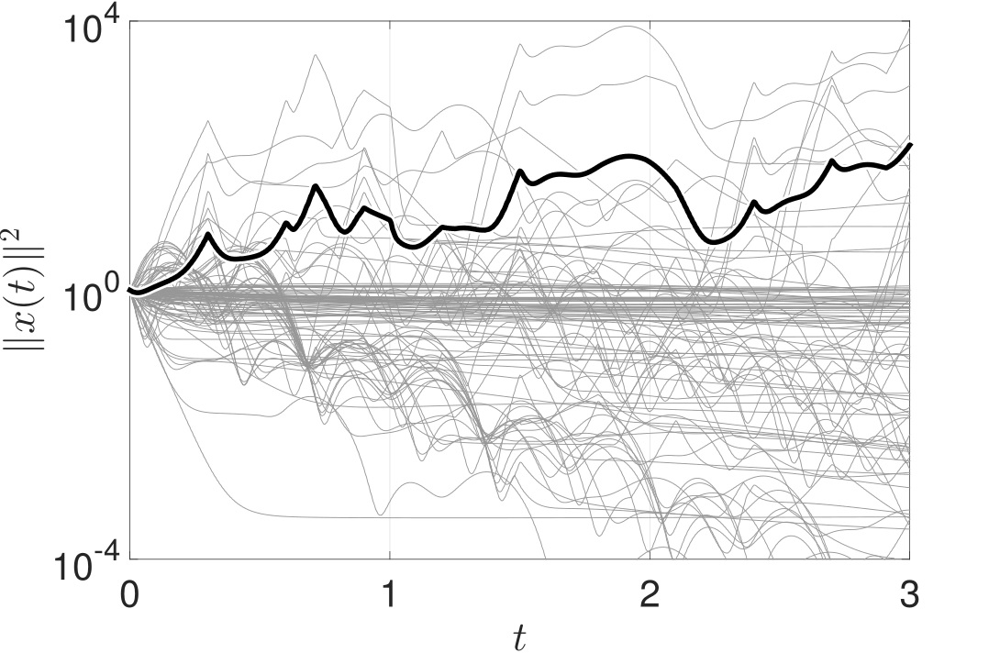

はじめに
我々のグループでは，制御工学とネットワーク科学を活用して，いろいろな大規模な現象の原理を解明し，またよりよく操るための研究をしています．理論を究めるというよりは，既存の理論・方法論を対象にあわせてうまく加工・応用することが多いです．以下にいくつか例をあげます．だいたい，上にあればあるほど新しいです．
最も良い製品開発チームを編成する
（作成中）
関連する論文
テンポラルネットワーク上の合意制御
（作成中）
関連する論文
- M. Ogura, J. Tagawa, and N. Masuda, “Distributed agreement on activity driven networks,” in 2018 American Control Conference (accepted), 2018. [ プレプリント ]

大腸菌の両賭け戦略
賭けをしたことはありますか？私はありません（ということにしておきます）が，じつは大腸菌も賭けをすることが知られています．「未来の環境が住みやすい」（例：栄養が多い）か「住みにくい」（例：栄養が少ない）かに賭けます（実際には大腸菌が意思を持って賭けをするわけではないのであしからず）．住みやすい方に賭けた大腸菌は，いつも通り成長しようとします．一方，住みにくい方に賭けた大腸菌は，成長はやめておいて身を守るモードに入ります．こうすると，実際に住みにくくなった場合にも身を守れます．こういった大腸菌の機構は両賭け戦略（bet-hedging strategy）として知られています．
さて，二つの選択肢がある時，どれくらいの割合で住みやすい／住みにくいに賭けをすると一番良いのでしょうか．本研究では，環境の変化がマルコフ的であるとき，賭けの割合が大腸菌の増殖率に及ぼす影響を数理モデルを使って解析しました．
関連する論文

ネットワークでランキングを制御する
（作成中）
関連する論文

遠隔で上手くものを操る―ネットワーク化制御
近年の情報技術の発展により，インターネットを介した遠隔制御が実現してきています．ネットワークを使うと配線で楽をできますが，同時に課題も生まれます．たとえば帯域の制限や通信の遅れなどです．この研究では，そういったネットワークの制限のもとで上手にものを操る手法を開発しています．
関連する論文
- M. Ogura, A. Cetinkaya, T. Hayakawa, and V. M. Preciado, “State feedback control of Markov jump linear systems with hidden-Markov mode observation,” Automatica, vol. 89, pp. 65-72, 2018. [ 論文 | プレプリント ]
- M. Wakaiki, M. Ogura, and J. P. Hespanha, “Linear quadratic control for sampled-data systems with stochastic delays,” in 2017 American Control Conference, 2017, pp. 1978-1983. [ 論文 | プレプリント ]

切り替えシステムの数理
種々のクラスの線形切替システムの安定性判別を行っています．特に，Markov regenerative processという広いクラスの確率過程によって表現される線形切替システムの安定性が，ある行列の固有値により特徴づけられることを導きました．
関連する論文
- M. Ogura, V. M. Preciado, and R. M. Jungers, “Efficient method for computing lower bounds on the p-radius of switched linear systems,” Systems & Control Letters, vol. 94, pp. 159-164, 2016. [ 論文 | プレプリント ]
- M. Ogura and V. M. Preciado, “Stability of Markov regenerative switched linear systems,” Automatica, vol. 69, pp. 169-175, 2016. [ 論文 | プレプリント ]
- M. Ogura and C. F. Martin, “Stability analysis of linear systems subject to regenerative switchings,” Systems & Control Letters, vol. 75, pp. 94-100, 2015. [ 論文 ]
インフルエンザと学級閉鎖の数理
インフルエンザは毎年冬に流行します．学級閉鎖が頻繁に起こります．今年（2018年）の1月22日から28日の間だけでも，日本全体で約1万件の学年閉鎖・学級閉鎖がありました．
いろいろ不思議なことがあります．まず，学級閉鎖はいつすれば良いのでしょうか．例えば奈良県では10%～15%の欠席率が一つの目安となっています（2009年の情報）．それでは，10%や15%の数字の根拠は何でしょうか．この論文では，「実際に学級閉鎖をどの時期にどの程度の日数で実施すべきかについての知見はほとんどない」とされています．そもそも，学級閉鎖は「役に立つ」のでしょうか．この報告書では，「通常の学級閉鎖」には「地域への感染拡大を抑える効果はほとんどないと考えられている」ともあります．なぜかというと，通常の学級閉鎖は「消極的」だからだそうです．欠席が増えてから閉鎖するのでは遅すぎて，感染拡大が起こる前に前もって「積極的」に学級閉鎖をするのが有効だとされているようです．
我々の研究グループでは，学級閉鎖やそれを一般化した社会距離戦略の有効性を検証しています．特に，適応的に変化するネットワーク上の感染症のダイナミクスの理解およびその最適な制御手法の開発を目標としています．
関連する論文